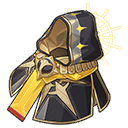
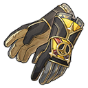
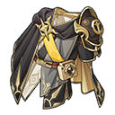
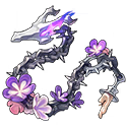

추천 광추
긴 밤의 별빛에게
HP와 기억 물질 공격 보강
효과 자세히
스킬로 HP를 소모하는 에버나이트와 긴 밤에 맞는다.
이별이 더 아름답도록
HP와 기억 정령 화력
효과 자세히
HP가 변한 뒤 정령 공격을 하는 운용에 적합.
땀은 많이, 눈물은 적게
치명타 확률과 정령 피해
효과 자세히
치확 상한에 도달하면 몸통·부옵을 치피로 옮긴다.
이야기의 다음 페이지
HP와 정령 공격 보강
효과 자세히
팀 치확 버프 확인 후 선택.
추천 유물
천지를 재창조한 구세주 4 · 고요한 습골지 2
- 머리

주옵션HP부옵션치명타 확률 상한 · 치명타 피해 · HP% · 속도 - 손

주옵션공격력부옵션치명타 확률 상한 · 치명타 피해 · HP% · 속도 - 몸통

주옵션치명타 피해부옵션치명타 확률 상한 · HP% · 속도 - 다리
 주옵션HP% / 속도부옵션치명타 확률 상한 · 치명타 피해 · HP% (주옵션 제외) · 속도 (주옵션 제외)
주옵션HP% / 속도부옵션치명타 확률 상한 · 치명타 피해 · HP% (주옵션 제외) · 속도 (주옵션 제외) - 구체
 주옵션얼음 피해 / HP%부옵션치명타 확률 상한 · 치명타 피해 · HP% (주옵션 제외) · 속도
주옵션얼음 피해 / HP%부옵션치명타 확률 상한 · 치명타 피해 · HP% (주옵션 제외) · 속도 - 매듭

주옵션HP% / 에너지 회복효율부옵션치명타 확률 상한 · 치명타 피해 · HP% (주옵션 제외) · 속도
이 조합을 추천하는 이유
기억 정령이 있으면 창세 결합 세트 발동. 장신구는 HP 5,000에서 치명타 피해 +28%.
천지를 재창조한 구세주 4 · 꿈을 엮는 요정의 낙원 2
- 머리 주옵션HP부옵션치명타 확률 상한 · 치명타 피해 · HP% · 속도
- 손 주옵션공격력부옵션치명타 확률 상한 · 치명타 피해 · HP% · 속도
- 몸통 주옵션치명타 피해부옵션치명타 확률 상한 · HP% · 속도
- 다리
주옵션HP% / 속도부옵션치명타 확률 상한 · 치명타 피해 · HP% (주옵션 제외) · 속도 (주옵션 제외)
- 구체
 주옵션얼음 피해 / HP%부옵션치명타 확률 상한 · 치명타 피해 · HP% (주옵션 제외) · 속도
주옵션얼음 피해 / HP%부옵션치명타 확률 상한 · 치명타 피해 · HP% (주옵션 제외) · 속도 - 매듭
 주옵션HP% / 에너지 회복효율부옵션치명타 확률 상한 · 치명타 피해 · HP% (주옵션 제외) · 속도
주옵션HP% / 에너지 회복효율부옵션치명타 확률 상한 · 치명타 피해 · HP% (주옵션 제외) · 속도
이 조합을 추천하는 이유
정령 편성에서 아군 전투 이탈 인원에 연동하는 피해 효과.
이 정도면 잘 키웠다
동일 파티·광추 기준 · 조건 [*]
| 스탯 | 추천 스탯 | 준종결 | 종결 |
|---|---|---|---|
| 치명타 확률 [*] 승급 2단계 +35% 적용 후 100%. 팀 치확이 있으면 필요한 장비 치확을 재계산. | 행적 제외 65% | 행적 제외 65% | 행적 제외 65% |
| 치명타 피해 [*] 전투 중 HP 소모 시 승급 2단계 강화분 별도. | 행적 발동 전 160% | 행적 발동 전 170% | 행적 발동 전 180%+ |
| HP [*] 본체·긴 밤의 HP 비례 피해에 반영. | 마을 7,000 | 마을 7,500 | 마을 8,000 |
| 속도 [*] 가이드 기본 속도 또는 그 이상. 전투 속도 버프 포함 전 기준. | 마을 99+ | 마을 99+ | 마을 99+ |
육성 단계의 기준
Lv.80·유물 +15 기준. 입문·중간 목표는 육성 편의를 위한 단계이며, 완성값의 버프와 편성 조건은 각주를 확인.
성혼과 추천 돌파
정령 전체 화력은 1돌부터, 자체 필살기 강화 유지와 기억 물질은 2돌.
1정령 피해 120/125/130/150%추천
적 수가 4+/3/2/1일 때의 기존 피해 배율.
2기억 물질 획득량 +2pt추천
본인·긴 밤 치피 +40%, 필살기 상태 충전 +2pt.
3전투 스킬 +2 · 일반 공격·정령 특성 +1
해당 스킬과 대응 강화 스킬의 레벨을 올린다.
4아군 정령 격파 효율 +25%
긴 밤은 추가 +25%.
5필살기·특성 +2 · 정령 스킬 +1
해당 스킬과 대응 강화 스킬의 레벨을 올린다.
6팀 모든 속성 저항 관통 +20%
긴 밤 공격으로 소모한 기억 물질 30%를 되돌려받는다.
추천 파티


기본 운영과 행적
기본 운영
스킬로 긴 밤 소환과 정령 치피 강화. 기억 물질을 모은 뒤 필살기 상태에서 긴 밤의 공격을 맞춘다.
행적 육성 순서
필살기·기억 정령 스킬·전투 스킬 → 특성·정령 특성. 승급 2와 4단계 먼저.
아하 속도 계산기 →기준과 출처 · 2026-11-25
4.7 게임 데이터 · Prydwen 개별 빌드